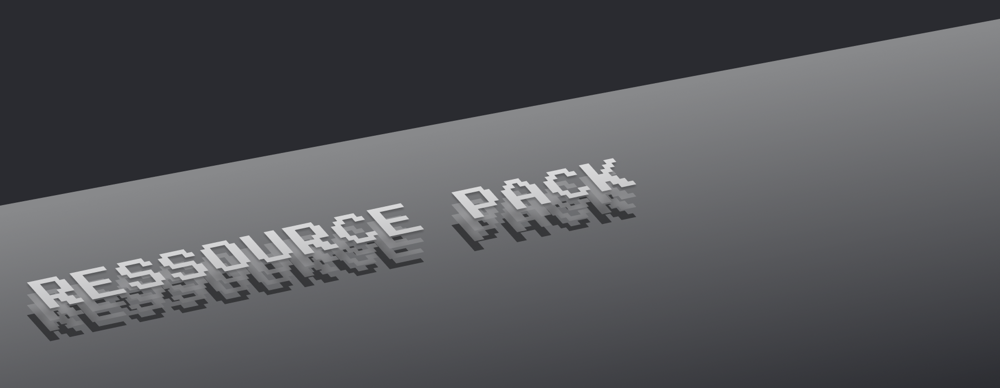

Conçue à partir du célèbre Faithful x32 créé par Vattic le pack megalos ajoute quelques add-ons et modifications séléctionné par Nesios.
liste des addons et des modifications disponible dans le credit.md du pack
Comme le pack est un mélange de plusieurs packs, d'addons et de modifications provenant de plusieurs auteurs, je ne peux pas autoriser la redistribution sur un autre site que celui ci.
Téléchargements